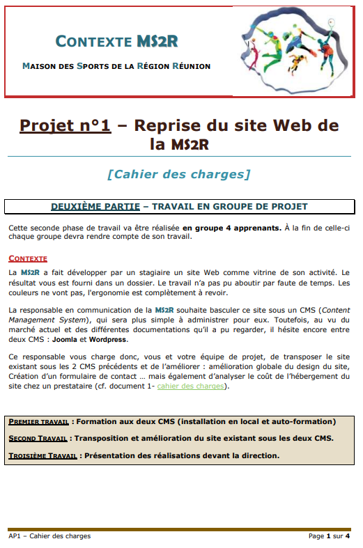
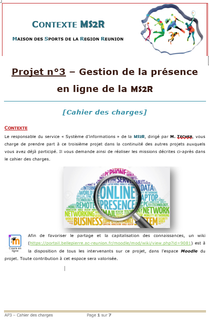
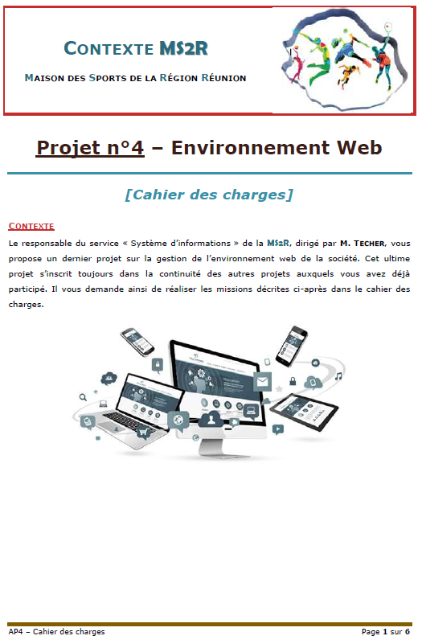
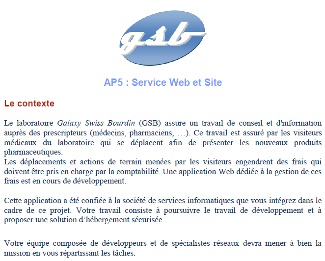
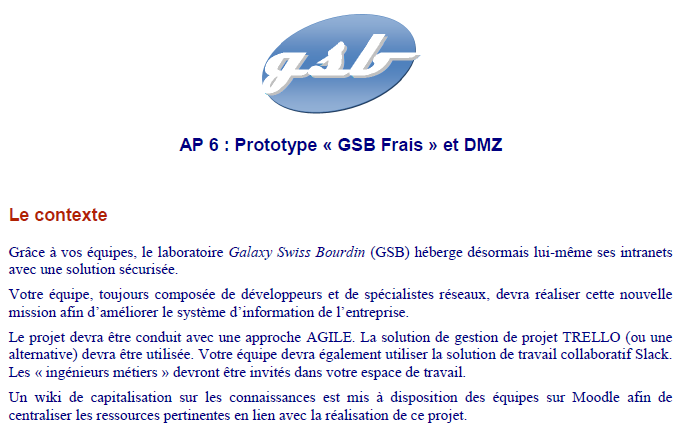
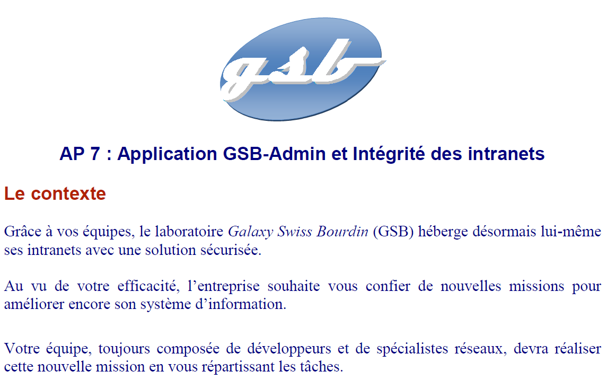

-
Patrimoine, Système & Réseaux: 4. Conduite de projet de SI

-
AP 1 : Reprise du site Web de la MS2R

-
AP 2 : Gestion du parc informatique de le MS2R


-
AP 3: Gestion de la présence en ligne de la MS2R

-
AP 4: Environnement Web

-
AP 5: Service Web et Site

-
AP 6: Prototype « GSB Frais » et DMZ

-
AP 7: Application GSB-Admin et Intégrité des intranets
